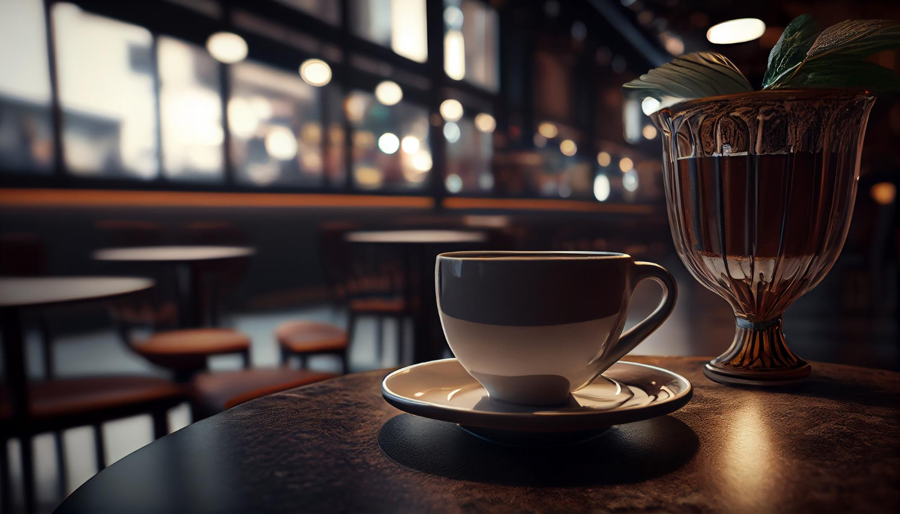

Discover Your Daily Retreat at Cozy Corner Cafe
Welcome to Cozy Corner Cafe, where every cup is brewed with love, and every visit feels like coming home. Escape the hustle and bustle of everyday life and find your sanctuary here.
Why Cozy Corner Cafe?
🌟 Unwind in Comfort: Our cozy atmosphere is designed to be your personal haven. Whether you’re catching up on work, enjoying a book, or meeting friends, our welcoming environment is perfect for any occasion.
🍰 Treat Yourself: Delight in our selection of freshly baked pastries, savory snacks, and delectable desserts. There's always something to satisfy your cravings and complement your drink.
🌿 Feel at Home: Our friendly staff is here to make your experience memorable. We pride ourselves on exceptional service and creating a space where you can truly relax and enjoy your time.
Come for the coffee, stay for the comfort. Cozy Corner Cafe awaits you with open arms and a hot cup of your favorite brew. Make us your daily retreat and experience the cozy charm that keeps our community coming back.
Cozy Corner Cafe is a cozy and charming cafe that has been serving the community for over a decade. We take pride in our commitment to quality ingredients and exceptional customer service.
The Cozy Corner Cafe: A Neighborhood Gem
In the heart of our vibrant community, nestled on a charming street, there is a humble yet inviting cafe that has become a beloved gathering place for locals and visitors alike. The Cozy Corner Cafe, owned and operated by Love,
is a true labor of love, born from a passion for exceptional coffee and a desire to create a welcoming space where people can connect, relax, and savor the simple pleasures in life.

Our Menu
At The Cozy Corner Cafe, every aspect has been carefully curated to create a truly unique experience.
The decor, a harmonious blend of rustic charm and modern sophistication, sets the tone for a space that feels both familiar and refreshing.
Comfortable seating invites customers to linger, whether they're catching up with friends, diving into a good book, or simply savoring a moment of respite from the outside world.
But it's the exceptional coffee that truly sets The Cozy Corner Cafe apart. Love has developed close relationships with local roasters, ensuring that each cup is crafted with the utmost care and attention to detail.
From the perfectly pulled espresso shots to the silky smooth lattes, every sip is a testament to the owner's dedication to the art of coffee making.
Beyond the coffee, The Cozy Corner Cafe offers an array of delectable baked goods, light fare, and specialty beverages that cater to diverse palates. Whether you're in the mood for a flaky croissant,
a hearty breakfast sandwich, or a refreshing iced tea, the menu is designed to delight and satisfy.